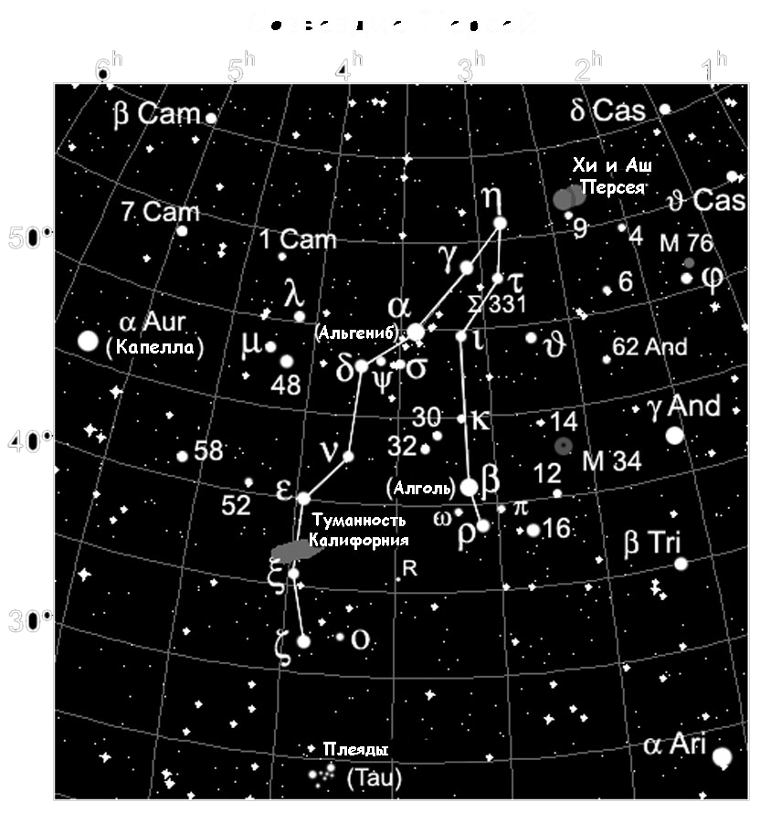

|  |
Персей на звездном небеСозвездие Персей занимает площадь в 615 квадратных градусов небосвода, благодаря чему занимает 24 место среди прочих созвездий. Данное созвездие практически полностью сосредоточено на Млечном Пути, поэтому оно хорошо просматривается на фоне неба молочно-белого цвета. Возле Персея можно найти зодиакальные созвездия Овна и Тельца, а также Кассиопею, Андромеду, Возничего. При хороших условиях наблюдения, когда ночь безлунная и довольно ясная, без использования оптики вы можете разглядеть в среднем 90 звезд Персея. Лучшее время для наблюдения данного созвездия наступает поздней осенью – в ноябре. Однако, жители средних широт России могут наблюдать его практически весь год, за исключением разве что мая и июня месяцев, когда Персей частично прячется на севере за пределами горизонта. Но, дождавшись ноября или декабря и подняв свой взгляд на звездное небо, каждый сможет различить на небосклоне неправильный многоугольник, образованный 11-ю самыми яркими звездами данного созвездия. Это и есть созвездие Персей. |